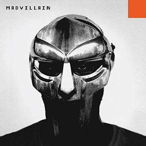

ALBUM FILE // 002
Madvillainy
Madvillain (MF DOOM & Madlib) - 2004
Madvillainy is the 2004 collaborative masterpiece created by MF DOOM and legendary producer Madlib. Recorded largely in a Los Angeles basement studio known as the "Bomb Shelter," the album tossed out every standard rule of hip-hop and became an instant, untouchable underground classic.
Release Year
2004
Genre
Abstract Underground Hip-Hop
Sound
Obscure jazz, psychedelic soul loops, comic-book skits, zero choruses, and pure villainy.
BACKGROUND
Two Geniuses In A Basement
In 2002, independent label Stones Throw Records managed to get two of the most elusive men in music into the same room. Madlib crafted the dusty, chaotic beats on a portable Boss SP-303 sampler (often while sitting in a hotel room in Brazil), while DOOM sat in the corner writing dense, stream-of-consciousness rhymes over them.
The project almost died in 2003 when an unfinished demo tape leaked onto the early internet. Frustrated, both artists walked away for months. When they finally reunited to finish it, DOOM dropped his vocal register into a calmer, more menacing, gravelly tone—accidentally perfecting the signature "villain" voice we know today.
STANDOUT TRACKS
Songs To Mention
- Accordion - built on a haunting Daedelus sample; contains some of the most famous opening bars in rap history.
- All Caps - the ultimate supervillain theme song, giving the world the permanent golden rule of spelling his name.
- Figaro - a jaw-dropping masterclass in breath control and rapid-fire internal rhyming.
- Rhinestone Cowboy - the grand finale where DOOM talks directly to the internet pirates who leaked his demo.
Why This Album Matters
Madvillainy proved that rap didn’t need catchy radio hooks, standard verse-chorus structures, or multi-million-dollar studios to be a masterpiece. Consisting of 22 short, hypnotic vignettes that play out like a surreal audio collage, it became the "Holy Grail" of independent music—heavily influencing a future generation of off-beat titans like Earl Sweatshirt, Tyler The Creator, and Danny Brown.